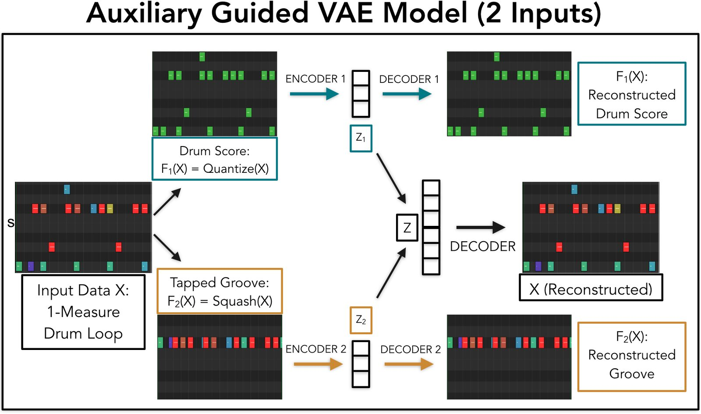
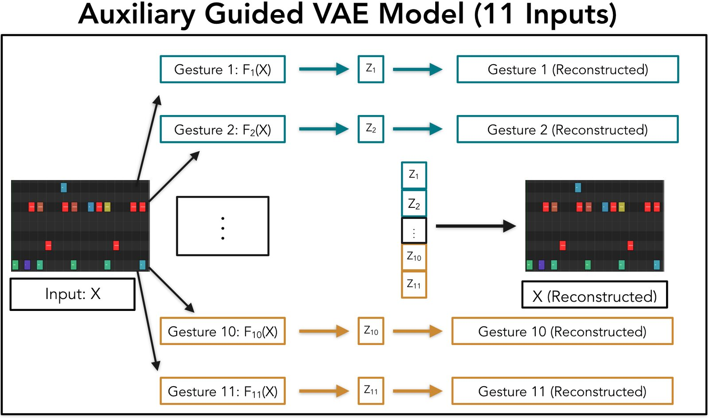
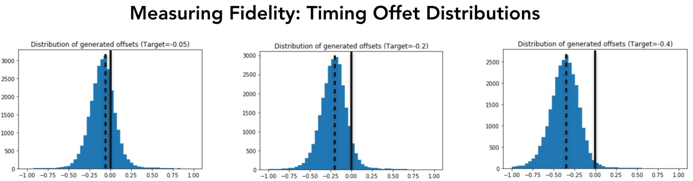

What to Play and How to Play it: Guiding Generative Music Models with Multiple Demonstrations
Abstract
We propose and evaluate an approach to incorporating multiple user-provided inputs, each demonstrating a complementary set of musical characteristics, to guide the output of a generative model for synthesizing short music performances or loops. We focus on user inputs that describe both “what to play” (via scores in MIDI format) and “how to play it” (via rhythmic inputs to specify expressive timing and dynamics). Through experiments, we demonstrate that our method can facilitate human-AI co-creation of drum loops with diverse and customizable outputs. In the process, we argue for the interaction paradigm of mapping by demonstration as a promising approach to working with deep learning models that are capable of generating complex and realistic musical parts.
Author Keywords
Music Performance Modeling, Interactive Music Generation, Gesture Mapping, Human-AI Collaboration
CCS Concepts
•Applied computing → Sound and music computing; Performing arts; •Human-centered computing → Gestural Input
Introduction
Communication between musicians can take time, effort, multiple attempts and clarifications, and often requires trial and error. In performance, composition, or production environments, contributors need to explain what they want from each other; any partnership or collaboration depends on the ability to clearly communicate ideas to the person whose job it is to execute those ideas musically (e.g. by playing an instrumental part, arranging a score, setting the level of a reverb effect, and so on).
When musicians and composers work with complex musical instruments and tools, communicating ideas to a machine can also require effort, exploration, and expertise (albeit expressed in a much different form), especially when the details of how an instrument works are opaque. Musical instruments and tools based on Artificial Intelligence (AI) and Machine Learning (ML), especially those built on powerful generative models capable of synthesizing human-like audio or MIDI, can be particularly difficult for users to navigate in predictable ways. Still, realistic and expressive outputs from this kind of model have inspired a growing interest among music creators to explore incorporating generative ML models into their creative practices[1][2][3].
Recent research highlights that while music creators can often count on ML music models to provide them with surprising or unexpected ideas, they tend to have a hard time controlling them, finding it difficult to achieve specific results when desired [3][4][5]. In response, a number of recent studies seek to make generative models easier for users to control by making them conditional - by training models with different types of input variables as probabilistic conditioning.
In practice, inputs to conditional generative models can take many forms, for example categorical variables like genre or the identity of a specific artist[1], initial themes for continuation [6][7][8], pitch contours [9][10][11], chord symbols [12][13][14], accented rhythms[15], or features summarizing the characteristics of individual notes [16][17]. Once a model has been trained, these variables can be exposed in different ways within user interfaces to provide different affordances. Before reaching this stage, however, the choice of conditioning variables (along with the choice of training data) outlines an initial set of limitations that define how a model might be used.
If our intended use for a generative model is to provide inspiration, to help us break out of existing patterns or habits, or to challenge ourselves by including a “musical other” into our composition practice[3], then many different ways of conditioning a model may serve us well; indeed, other approaches that do not involve ML may also work just as well. As soon as we begin to make our goals more specific, however, designing and implementing conditional models becomes harder[4] and requires solving interconnected technical and interaction challenges at the same time.
In this work, taking inspiration from the ways in which musicians communicate with one another - in particular, by demonstrating an idea with multiple views drawn from different modalities - we contribute and experiment with a framework for designing and training conditional generative models with multiple complementary user inputs.
To anchor this notion of communication through multiple demonstrations with a specific recorded example, consider the diverse array of communication styles displayed by music producer Oak Felder in the process of collaborating with a drummer [18]. Within the span of no more than a few minutes, Felder: (1) offers high-level stylistic suggestions (“I’m wondering if it should be a little more complex.”), (2) provides specific instructions about one instrumental part (“No hi-hat.”), (3) demonstrates a drum pattern through sound with a vocal imitation, (4) indicates a drum fill by briefly playing air drums, and (5) nods his head to the side in time with the music to show where accented beats should go. Some of this guidance is given through examples (e.g. vocal and motion-based gestures), and other instructions, though expressed verbally by Felder, could presumably also be demonstrated to a machine by example (e.g. a blank hi-hat track indicates “No hi-hat.”) Over the course of this interaction, Felder conveys some of the more concrete details only once (e.g. “No hi-hat”), while reinforcing more abstract concepts by demonstrating them in more than one way (e.g. gesturing a drum pattern in the air while vocalizing a version of it at the same time). In the end, based on all these different cues, the drummer picks up on the intentions of the producer, and they successfully record the part together.
We do not bring up this example in order to argue that we should interact with computer models just like we do with humans, using natural language interfaces and so on; rather, we find it instructive to highlight the range of examples that a producer instinctively draws on here in order to convey their intention to the drummer. By breaking down an idea, which at firsts only exists in Felder’s imagination, into complementary (even if sometimes overlapping) components, some of which can be expressed well in one way and some better in another, the producer can convey information to the drummer more effectively.
Drawing inspiration from this kind of multifaceted communication between producer and musician, which happens not instantaneously but over the course of the time it takes to design or perform the relevant demonstrations, we experiment in this paper with building generative models that accept two or more user-provided conditioning inputs given by example, with each input designed so as to be possible for a user to create. ML models offer promise as useful tools particularly when a user has an idea in mind that is difficult to create from scratch (for example because the user is not sitting in front of a drum kit or doesn’t know how to play drums[15]), but which can be still be specified by example in some simpler form.
To ground our experiments in a context that we hope can be of practical use to music creators, we focus on models for generating two-measure drum loops. This particular task of creating drum and percussion parts is of broad interest to creators in many styles of music, and models for generating drums have already been implemented in publicly available toolkits for music producers [5][19][20], making it easier to implement the methods we explore within interfaces similar to those in the toolkits above. Using drum recordings from the Groove Midi Dataset [15], we explore Variational AutoEncoder (VAE) models[21] for generating drum beats based on two or more user inputs, with every input defined in MIDI format and able to be specified by example either through gestures recorded by a MIDI keyboard or microphone, or through grid interfaces like those found in drum machines. In working on creating drum loops, we pay particular attention not just to the pattern of which drums are to be played, but also to how they are played, modeling precise microtiming and dynamics information, which is known to be difficult for users to create by hand without performing any gestures to demonstrate [15].
This work’s primary contributions are as follows:
We design and implement a factorized Variational AutoEncoder model for generating drum performances conditioned on multiple inputs that cover aspects of both a musical score and how that score should be played. We experiment with a model that accepts two inputs and another that takes up to eleven, more fine-grained, inputs. We demonstrate that these models allow us to generate drum loops with more diverse and more precisely specified outputs than existing methods.
We show that by factorizing score and performance characteristics into separate latent variables, we can overcome difficulties with sampling encountered in previous work in order to maintain diverse outputs while still leveraging efficient data representations that use continuous rather than discrete values to model microtiming and dynamics in music.
We tie together recent research in conditional generative models for music with the interaction framework of mapping by demonstration and offer a technical approach based on models that can accept multiple demonstrations from users, which we hope will take steps toward enabling future user-centered research on human-AI co-creation with music generation models.
Code and pre-trained models developed for this paper can be found at: https://github.com/jrgillick/groove
Related Work
This paper builds on our previous research on drum loop generation [15], which serves as a starting point for the applications and the machine learning methods that we explore. Previously, we proposed two models for conditional generation of drum loops using a Recurrent Variational AutoEncoder (a GrooVAE). One model explores the task of Humanization - automatically generating dynamics and timing variations giving a quantized Midi input, and the other proposes an application called Drumify, in which a model generates drum loops based on an input rhythm with expressive timing (which could be tapped out on a surface or implied by the onsets of another instrument), but with no specified instrumentation or score. In each case, these models are able to synthesize realistic drums that listeners have difficulty distinguishing from real loops in the data set.
Both of these interactions, however, are limited in that they only afford the user one input at a time in order to specify what they want. This means that in practice, if a user has a specific beat in mind, the Humanize model does not offer control over how the model will add expressive dynamics and timing to that beat; as a result, for any given input score, the output is almost always the same. Similarly, the Drumify model does not provide any control over which drums are played; for example, it is left up the model to choose whether to use the ride cymbal or the hi-hat. In our experiments here, we attempt to address these limitations with regard to both diversity and control.
We also draw more broadly from a number of other studies on conditional models for music generation. Recent work on music generation based on some kind of user input includes models that provide counterpoint to an improvised melody[22], map eight buttons on a game controller to the 88 keys on a piano[23], or synthesize the audio for one instrument based on fine-grained pitch contours and dynamics from another signal[11]; we build on these by exploring multiple complementary gestural inputs at the same time. On the modeling side, we also build on work using factorized representation learning to control generation of monophonic[24] or polyphonic [9][13] music scores. We explore a different kind of factorization here, however, by separating out scores from performance characteristics, as well as a different model architecture.
Finally, we draw inspiration from gesture mapping [25][26][27] in designing the conditioning inputs used in generative models around the concept of a gesture (which has been defined in a number of different ways but can be broadly categorized as some kind of sensed input performed or specified by a user). Much research within the NIME and Computer Music communities focuses on interaction paradigms centered around mapping various kinds of user inputs (which often take the form of performable gestures) onto output parameters for controlling sound [26][28]. By providing demonstrations of gestures, users can train their own mapping models by example using machine learning[27]. Most approaches to gesture mapping attempt to modify a relatively small number of output parameters (e.g. a handful of knobs on a synthesizer) [29], as opposed to the many thousands or millions of parameters in large neural network models; as a result, gesture mapping often provides more precise control than has typically been possible with large music generation models.
One barrier that has inhibited music generation models from being put to use in the same way as gesture mapping, however, is the size of datasets and expense of computational resources needed to train them, which prevents users from choosing and manipulating their own training data. A number of recent studies have explored ways to either make models smaller and faster to train[20] or to enable customization of pre-trained models to meet user needs [30]. We see this line of work as complementary to the model conditioning work that we explore here; depending on the context, interactions may be better facilitated by more precise conditioning controls, easier management of training data, or a combination of both.
Proposed Models and Implementation
Modeling Two Inputs: Score and Groove
Starting from the hypothesis that multiple different forms of user input can lead to more controllable and diverse generated music, we operationalize the idea of model inputs as gestures by implementing a factorized neural network model architecture called an Auxiliary Guided Variational AutoEncoder [31]. We first implement a model that accepts two inputs - one for quantized drum scores (specifying what to play) and one for tapped rhythmic inputs (specifying how to play it), with each of these inputs implemented exactly as in the previously published Humanize and Drumify models [15]. An important point to make here is that these inputs are not directly provided in the data set; at training time, as with other AutoEncoder models, we are restricted to using inputs that can be computed with some function applied to an input data point . Through the design of a function , we specify a mapping from drum loops (high dimensional realistic data points) to simplified descriptors of those loops (which are easier for users to create with a gesture); we then train models to learn the inverse mapping from gestures to data. For this model, we define two functions during training that take the place of user inputs at inference time: (X) is a quantization function that removes all microtiming and velocity information from a drum loop (keeping only drum score), and (X) is a “squashing” function that has the opposite effect, keeping performance characteristics in the form of microtiming and velocity, but discarding the drum score. Figure 1 visualizes the architecture of this neural network model.


Figure 1: Auxiliary Guided Variational AutoEncoder model trained to take two user inputs (a quantized drum score and a tapped rhythm expressing the groove of the loop). Features of the drum sequence, which are designed to be similar to inputs that could be demonstrated by a user through an example, are extracted via functions (X) (here, a quantization function that removes microtiming and velocity) and (X) (here a “squashing” function that preserves microtiming and velocity but discards the score).
This architecture differs from a standard VAE in two ways. First, while a typical VAE, which we treat as a baseline, has a single latent variable , the Score and Groove inputs to this model are each encoded (in this case with bidirectional LSTM encoders) into separate latent variables and , which are both independently trained to match standard normal distributions; following Roberts et al.[32], we train using the free bits method (hyper-parameters to balance the two loss terms in a VAE) with a tolerance of 48 bits. and are subsequently concatenated and passed to a decoder (also an LSTM), whose goal is to reconstruct the original drum sequence from the training data. This separation between and (sometimes called factorizing or disentangling) aims to explicitly capture some of the variation among each of these two aspects of the data (Score and Groove) with specific variables. One of our goals of factorizing in this way is to attempt to overcome problems with diversity reported in previous work, in which when generating performance characteristics for an input score, a given loop was always Humanized in the same way [15]; with this model, by sampling different values for or inputting different Grooves, we can try to synthesize different performances for the same score. This factorization also affords a user two complementary ways of specifying a desired drum loop (by independently providing a Score and a Groove).
The second distinguishing feature of this architecture is the inclusion of Auxiliary Decoders, similar in form to those proposed by Lucas and Verbeek for image generation[31]. As shown in Figure 1, in addition to the decoder trained to reconstruct the original drum loop, separate decoders ( and ) are trained at the same time to reconstruct the input Score and the input Groove. This variant of an AutoEncoder, which appears not to have been employed before for modeling music, offers promise for two reasons: first, it explicitly reinforces the incentive for the latent variables and to capture the relevant information, and second, it offers a mechanism for users to inspect the model’s interpretation of each input gesture: along with a generated drum loop, a user can also listen to or visualize the model’s reconstructions of the Score and the Groove corresponding to that loop. Examining these auxiliary reconstructions allows the user (or model developer) one option for investigating the strengths and weaknesses in the model, which may be helpful in learning how to work with it. For example, if the auxiliary reconstruction of a user-provided Groove is inaccurate, this suggests that the model is unable to recognize the given gesture; this feedback can direct the user to try again by performing the gesture slightly differently in order to better work within the model’s limitations.
Breaking it Down Further: Modeling More Inputs
In addition to the VAE with two inputs, in the spirit of our motivating example where a producer explains a drum beat to a drummer in several different ways, we further experiment with factorizing our model into more components, with the hope of capturing more options for diverse outputs and controllable interaction. Here, we divide the latent variable into 11 components …Z11. This time, we separate the 9 different drum instruments from the score into 9 different latent variables (visualized at the top of Figure 2), such that a user can specify as few or as many of these as they choose to, with the option to sample the others. For example, a user can specify a pattern for the kick and snare drums, provide an empty pattern on the crash cymbal channel indicating not to play any crash cymbals, and through sampling the other latent variables, leave the choice of whether to add hi-hats or ride cymbal for the model to decide. At the same time, in addition to the Groove input defined in the first model, we add a second performance-style input that captures musical Accents, indications of where notes are emphasized by being played louder. Here, we define accents as binary vectors with one input corresponding to each 16th note timestep (we use a 16th note resolution in time for these models, although other resolutions offer different advantages and disadvantages[20]); we consider a metrical position in the dataset to be accented if it contains a note (on any drum) whose Midi velocity is more than one standard deviation above the mean velocity for that drum, calculated over the entire sequence.
In describing our models, we adopt the terminology of gesture to refer to each of the inputs, though some inputs could be either performed by a user in the typical sense of a gesture, or created in another way, for example by composing them in a Midi editor. In this second model, because each gesture is expected to be packed with less information, we simplify the encoder and decoder architectures in the interest of reducing model size and training time, using small feed-forward MLP neural networks instead of LSTM. We experimented with simplifying the main decoder as well, but we found that in order to generate realistic outputs comparable to those in previous work, it was important to use a more powerful architecture than an MLP, so we use an LSTM here as well.


Figure 2: Auxiliary Guided VAE Model with 11 Inputs. This version breaks drum loops further into 11 different latent variables: 9 based on the score (1 for each instrument in the kit) and 2 based on performance features (one specifying microtiming through a tapped rhythm and one specifying accented beats).
Experiments
To evaluate our model designs, we examine metrics computed on the test partition of the Groove Midi Dataset, measuring two main aspects of our proposed methods. First, we look at the diversity of generated drum loops using our models, comparing against the aforementioned GrooVAE model[15] in the context of the task of Humanizing quantized drum scores (by generating MIDI velocities and microtimings), and second, we examine the potential for controllability afforded by these models. While controllability will ultimately depend on the context of how, and with which users, a model is situated in an interactive setting, as a starting point, we use the idea of fidelity as proxy: given a particular input gesture, we examine the degree to which the model outputs exhibit the characteristics demonstrated by that input.
We have not yet deployed these models in an interactive interface to study their usability in practice, but this choice of metrics is informed by our findings from previous work in which we deployed the Humanization and Drumify models (treated here as baselines) as plugins in Ableton Live [15][5] and tested them with users. We believe that improving on these quantitative metrics is an important next step in our ongoing iterative process of designing tools for musical human-AI co-creation.
Measuring Diversity in Generated Performance Characteristics
To measure diversity, we explore the task of Humanization. In this task, a model’s job is to take a quantized drum loop as input (a Score), and then synthesize performance characteristics (microtiming and velocity) for that input. One of the motivating factors for this work was the shortcoming of our baseline model [15], which, although able to create realistic outputs, always generated the same stylistic outcomes. For this metric, we look at the standard deviations of timing offsets generated by each model. Following the baseline implementation, we calculate timing offsets as continuous numbers between -1 and 1, which represent how far each drum onset falls between the current timestep and an adjacent one. Drum hits played late, or behind the beat, are represented by positive numbers here, and drum hits played early, or ahead of the beat, are given negative numbers.
Using two-measure windows extracted from every drum performance in the test set (a total of 2192 sequences), we humanize each drum sequence five times with each model, and then among each set of five generated loops, we compute the mean element-wise standard deviations of the timing offsets, such that notes in the same position (e.g. a snare on beat 3) are compared with each other. This yields a single measurement for each test sequence, which we finally average across the entire test set. A higher standard deviation here indicates more diverse outputs.
In this experiment, we compare three conditions: (1) the baseline Variational AutoEncoder model that includes neither factorized latent variables nor Auxiliary Decoders, (2) our factorized model without Auxiliary Decoders, and (3), the full model shown in Figure 1. In the baseline model, only the Score input is provided; for our new models, we implement the Humanization task by taking a single score as input, while, across each of the five runs, we sample a random vector for to pass to the decoder.
Measuring Fidelity to a Gesture
In a second experiment, as a proxy for measuring the controllability of interactions with our models, we look at how well the generated outputs match the characteristics of a given gesture in the new model. Here, we fix an input Groove with a pre-specified pattern of timing offset values (e.g. 0.5 for every off-beat 16th note and 0 for every on-beat 16th note to indicate a 16th note swing), before applying the same Groove to every Score in the test set using the 2-input Auxiliary Guided VAE model shown in Figure 1. After applying the same 3 Grooves as conditioning inputs paired with the Score extracted from every sequence in the test, we plot the resulting distributions for each groove and measure the means and standard deviations of the generated timing offsets on the off-beats. For the three different input grooves, we use a different fixed offset value (-0.05, -0.2, and -0.4, respectively) for every alternate 16th note position. This corresponds roughly to choosing a particular Swing value (as is common in drum machines) as a conditioning input. Unlike drum machines, however, in which timing offsets are applied uniformly through a templated approach, we might not expect the synthesized outputs from our machine learning models to conform exactly to this value; the goal here is again to guide the model towards a particular groove rather than to control it exactly.
Results and Discussion
Through our quantitative evaluations, we find that, in general, the methods explored in this work appear promising for both diversity and controllability in generated drum loops. As Table 1 shows, our measurement of diversity confirms the finding reported previously that the baseline model usually performs Humanization in the same way each time. The Standard Deviation metric of 0.061 (measured as a proportion of the distance between successive metrical positions as 16th note resolution) for the baseline in Table 1 is quite small; for context, even changing the timing of a drum pattern by two standard deviations here would not be enough, for example, to change a beat from a straight feel to a heavy swing feel. The factorized VAE models, however, show a different trend, with much higher Standard Deviations among the timing offsets; the version using Auxiliary Decoders shows the most diversity here with a Standard Deviation of 0.22. Furthermore, alternative methods for adding diversity during sampling do not help the baseline here: increasing the value of the temperature parameter in the decoder does not change the metrics in Table 1, and adding noise to the latent vector before decoding has the undesirable side effect of causing the model not to follow the given input Score.
Table 1: Measuring Diversity in Generated Timing Offsets
Model | Standard Deviation of Timing Offsets |
Baseline VAE[15] | 0.061 += 0.001 |
Factorized VAE | 0.200 += 0.002 |
Factorized VAE + Auxiliary Decoders | 0.222 += 0.002 |
Our subjective experience in listening to these Humanizations accords with the metric here as well; we find that unlike with the baseline, these models generate perceptually different results. Depending on the Groove conditioning, sometimes the same beat is played with a swung or triplet feel, and other times it is played straight. In addition, drums and metrical positions are accented different across different runs.
In our second experiment, a case study in examining the fidelity of our Auxiliary Guided VAE model to a gesture (the gesture in question is a Groove representing a particular amount of swing), we find that when applied broadly to a large number of input Scores, the average swing values (as measured by timing offsets on off-beats) come quite close to the target values. Different swing values lead to slightly different trends here: guiding the model toward more heavily swung beats tends to give slightly larger variation in the generated outputs than when specifying beats with less swing, and in general, offset values tend to regress slightly to the mean of the entire dataset. Table 2 summarizes these results, and Figure 3 visualizes the distributions from this experiment.
Table 2: Measuring Fidelity to a Gesture (Swing Amount)
Target Swing Amount | Generated Swing (Mean) | Generated Swing (Std. Dev) | Difference in Means |
-0.05 | -0.091 | 0.161 | 0.042 |
-0.2 | -0.214 | 0.163 | 0.014 |
-0.4 | -0.366 | 0.175 | 0.034 |


Figure 3: Distribution of timing offsets for 3 different target Grooves. From left to right, the target values specified by the three conditioning inputs are -0.05, -0.2, and -0.4.
In addition to the metrics reported above, which focus on the 2-input model factorizing Score and Groove, we also explored the larger 11-input model more informally by listening to a number of outputs with different conditioning setups. For example, in one experiment, we fixed all of the gestural inputs except for the features specifying the intended patterns for hi-hats and ride cymbals. We then applied several different hi-hat or ride input patterns given the same fixed set of other conditioning inputs. We found that the results were usually quite realistic, though in some cases slightly less so than with the baseline or the simpler 2-way model. The possibilities for diversity and control, however, appear richer: the model did follow the input specification, reliably switching between hi-hat and ride cymbal, while still following the same groove in each alternate condition. The model also seemed to make reasonable choices in this case when forced to choose between mismatched conditioning inputs (e.g. specifying an Accent or emphasizing a Groove in a metrical position where the corresponding score is blank). As we might expect, however, not all combinations of input gestures are able to lead to realistic results; in particular, when we specified less common patterns through the input gestures, model outputs were either less realistic or less faithful to the specified gesture.
Conclusions
Designing and developing technology to guide complicated generative music models towards user-specified musical goals is a challenging problem that has recently seen increased interest among ML and MIR research communities. As researchers from these communities have increasingly turned away from working solely on the technical aspects of machine learning and toward studying how to making generative models easier for users to control, research questions have begun to overlap with existing work on mapping from the NIME community: increased control, broader interaction possibilities, and new methods for human-AI co-creation motivate much recent work on conditional models for music generation [10] [15][23]. This convergence (which has also been raised by others [3]) motivates our current work, in which we aim to continue to move music generation research toward directions where it may be able to meet the creative needs of music creators.
In this paper, we build on this strand of technical research, exploring a new combination of conditioning inputs and implementing them in a model for generating drum loops. At the same time, drawing inspiration from work in on gesture mapping, we reinterpret the technical formulation of conditional generative models into a simple interaction paradigm based on guiding ML models with demonstrations, and show through experiments as well as informal subjective evaluations that our approach can enable diverse and controllable interactions with music generation models. We hope that this approach will provide useful grounding for future technical and user-centered research on musical interactions between people and AI.
Citations
- ↩Dhariwal, P., Jun, H., Payne, C., Kim, J. W., Radford, A., & Sutskever, I. (2020). Jukebox: A generative model for music. ArXiv Preprint ArXiv:2005.00341.
- ↩Zukowski, Z., & Carr, C. (2018). Generating black metal and math rock: Beyond bach, beethoven, and beatles. ArXiv Preprint ArXiv:1811.06639.
- ↩Sturm, B. L., Ben-Tal, O., Monaghan, Ú., Collins, N., Herremans, D., Chew, E., … Pachet, F. (2018). Machine learning research that matters for music creation: A case study. Journal of New Music Research, 48(1), 36–55.
- ↩Huang, C.-Z. A., Koops, H. V., Newton-Rex, E., Dinculescu, M., & Cai, C. (2020). AI song contest: Human-AI co-creation in songwriting. In Proceedings of the 21st International Society for Music Information Retrieval Conference (pp. 708–716). Montreal, Canada: ISMIR.
- ↩Roberts, A., Engel, J., Mann, Y., Gillick, J., Kayacik, C., Nørly, S., … Eck, D. (2019). Magenta Studio: Augmenting Creativity with Deep Learning in Ableton Live. In Proceedings of the 6th International Workshop on Musical Metacreation (p. 7). Charlotte, United States: MUME.
- ↩Pachet, F. (2003). The continuator: Musical interaction with style. Journal of New Music Research, 32(3), 333–341.
- ↩Huang, C.-Z. A., Vaswani, A., Uszkoreit, J., Simon, I., Hawthorne, C., Shazeer, N., … Eck, D. (2019). Music Transformer. In International Conference on Learning Representations.
- ↩Sturm, B., Santos, J. F., Ben-Tal, O., & Korshunova, I. I. (2016). Music Transcription Modelling and Composition Using Deep Learning. In Proceedings of the 1st Conference on Computer Simulation of Musical Creativity (p. 6). Huddersfield, UK: CSMC.
- ↩Yang, R., Wang, D., Wang, Z., Chen, T., Jiang, J., & Xia, G. (2019). Deep Music Analogy Via Latent Representation Disentanglement. In Proceedings of the 20th International Society for Music Information Retrieval Conference (pp. 596–603). Delft, The Netherlands: ISMIR.
- ↩Yang, R., Chen, T., Zhang, Y., & gus xia. (2019). Inspecting and Interacting with Meaningful Music Representations using VAE. In Proceedings of the International Conference on New Interfaces for Musical Expression (pp. 307–312).
- ↩Engel, J., Hantrakul, L. (Hanoi), Gu, C., & Roberts, A. (2020). DDSP: Differentiable Digital Signal Processing. In International Conference on Learning Representations.
- ↩Simon, I., Roberts, A., Raffel, C., Engel, J., Hawthorne, C., & Eck, D. (2018). Learning a latent space of multitrack measures. ArXiv Preprint ArXiv:1806.00195.
- ↩Wang, Z., Wang, D., Zhang, Y., & Xia, G. (2020). Learning interpretable representation for controllable polyphonic music generation. In Proceedings of the 21st International Society for Music Information Retrieval Conference (pp. 662–669). Montreal, Canada: ISMIR.
- ↩Wang, Z., Zhang, Y., Zhang, Y., Jiang, J., Yang, R., Xia, G., & Zhao, J. (2020). PianoTree VAE: Structured representation learning for polyphonic music. In Proceedings of the 21st International Society for Music Information Retrieval Conference (pp. 368–375). Montreal, Canada: ISMIR.
- ↩Gillick, J., Roberts, A., Engel, J., Eck, D., & Bamman, D. (2019). Learning to Groove with Inverse Sequence Transformations. In International Conference on Machine Learning (pp. 2269–2279).
- ↩Jeong, D., Kwon, T., Kim, Y., Lee, K., & Nam, J. (2019). VirtuosoNet: A Hierarchical RNN-based System for Modeling Expressive Piano Performance. In Proceedings of the 20th International Society for Music Information Retrieval Conference (pp. 908–915). Delft, The Netherlands: ISMIR.
- ↩Jeong, D., Kwon, T., Kim, Y., & Nam, J. (2019). Score and performance features for rendering expressive music performances. In Proceedings of the Music Encoding Conference.
In the studio with Grammy-nominated music producer Oak Felder. (2020, April 29). [Video]. YouTube. https://www.youtube.com/watch?v=0mUC8nO8-HA
↩- ↩Tokui, N. (2020). Towards democratizing music production with AI-Design of Variational Autoencoder-based Rhythm Generator as a DAW plugin. ArXiv Preprint ArXiv:2004.01525.
- ↩Vigliensoni, G., McCallum, L., & Fiebrink, R. (2020). Creating Latent Spaces for Modern Music Genre Rhythms Using Minimal Training Data. In Proceedings of the 11th International Conference on Computational Creativity.
- ↩Kingma, D. P., & Welling, M. (2013). Auto-encoding variational bayes. ArXiv Preprint ArXiv:1312.6114.
- ↩Benetatos, C., VanderStel, J., & Duan, Z. (2020). BachDuet: A deep learning system for human-machine counterpoint improvisation. In Proceedings of the International Conference on New Interfaces for Musical Expression.
- ↩Donahue, C., Simon, I., & Dieleman, S. (2019). Piano genie. In Proceedings of the 24th International Conference on Intelligent User Interfaces (pp. 160–164).
- ↩Chen, K., Wang, C., Berg-Kirkpatrick, T., & Dubnov, S. (2020). Music SketchNet: Controllable music generation via factorized representations of pitch and rhythm. In Proceedings of the 21st International Society for Music Information Retrieval Conference (pp. 77–84). Montreal, Canada: ISMIR.
- ↩Levitin, D. J. (2002). Control parameters for musical instruments: a foundation for new mappings of gesture to sound. Organised Sound, 7(2), 171–189.
- ↩Fiebrink, R., Trueman, D., & Cook, P. R. (2009). A Meta-Instrument for Interactive, On-the-Fly Machine Learning. In Proceedings of the International Conference on New Interfaces for Musical Expression (pp. 280–285).
- ↩Françoise, J. (2013). Gesture–sound mapping by demonstration in interactive music systems. In Proceedings of the 21st ACM international conference on Multimedia (pp. 1051–1054).
- ↩Fried, O., & Fiebrink, R. (2013). Cross-modal Sound Mapping Using Deep Learning. In Proceedings of the International Conference on New Interfaces for Musical Expression (pp. 531–534).
- ↩Huang, C. A., Duvenaud, D., Arnold, K. C., Partridge, B., Oberholtzer, J. W., & Gajos, K. Z. (2014). Active learning of intuitive control knobs for synthesizers using gaussian processes. In Proceedings of the 19th international conference on Intelligent User Interfaces (pp. 115–124).
- ↩Dinculescu, M., Engel, J., & Roberts, A. (Eds.). (2019). MidiMe: Personalizing a MusicVAE model with user data. Workshop on Machine Learning for Creativity and Design, NeurIPS.
- ↩Lucas, T., & Verbeek, J. (2018). Auxiliary guided autoregressive variational autoencoders. In Joint European Conference on Machine Learning and Knowledge Discovery in Databases (pp. 443–458).
- ↩Roberts, A., Engel, J., Raffel, C., Hawthorne, C., & Eck, D. (2018). A hierarchical latent vector model for learning long-term structure in music. ArXiv Preprint ArXiv:1803.05428.